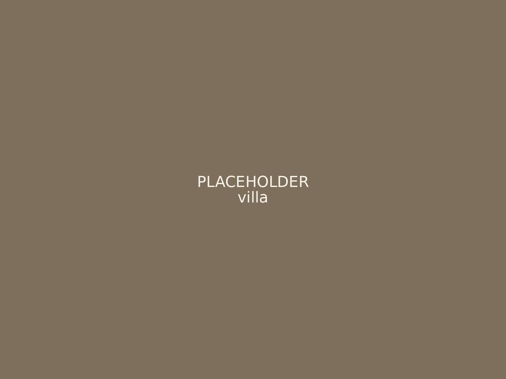
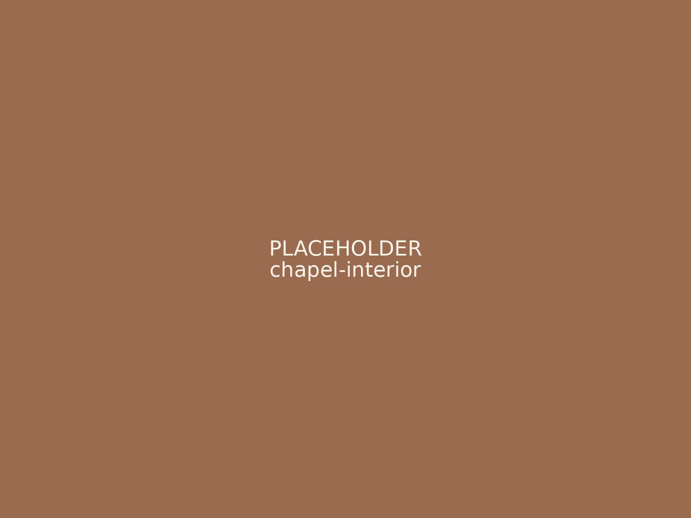
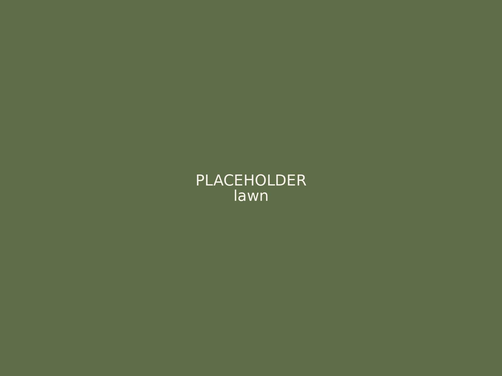
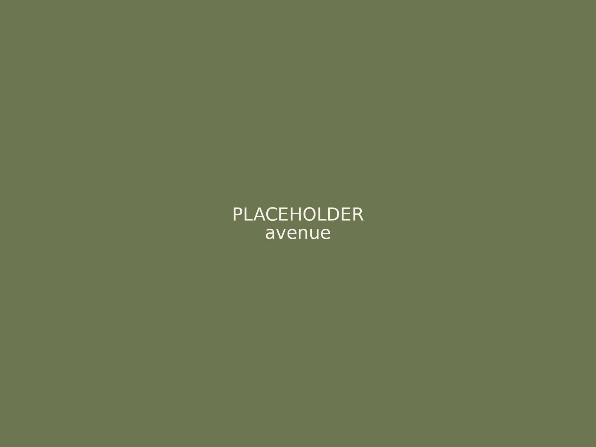
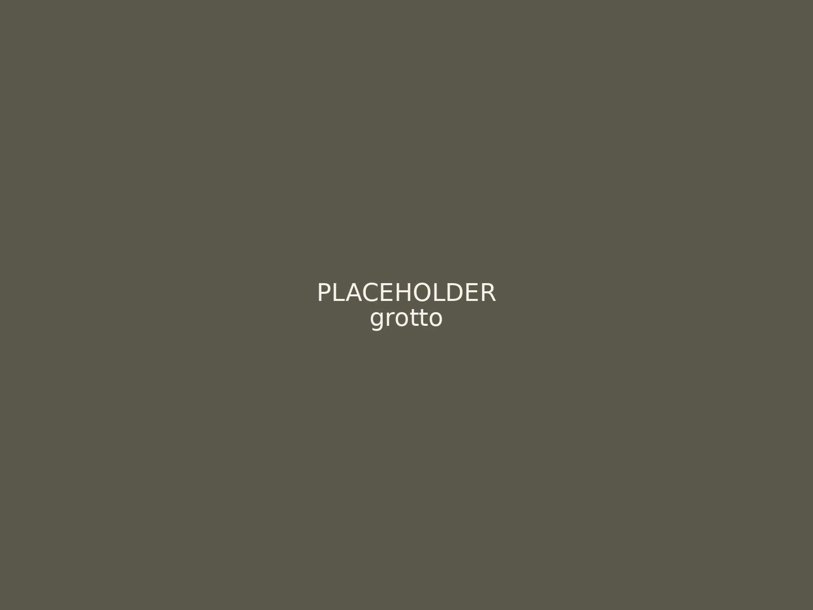
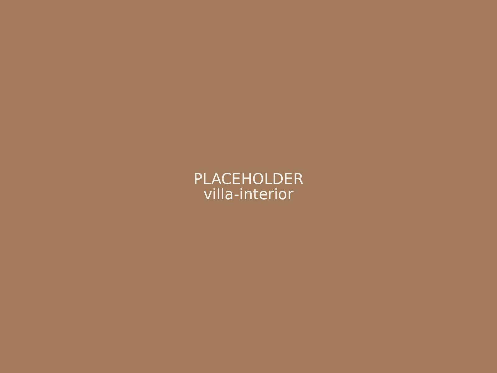
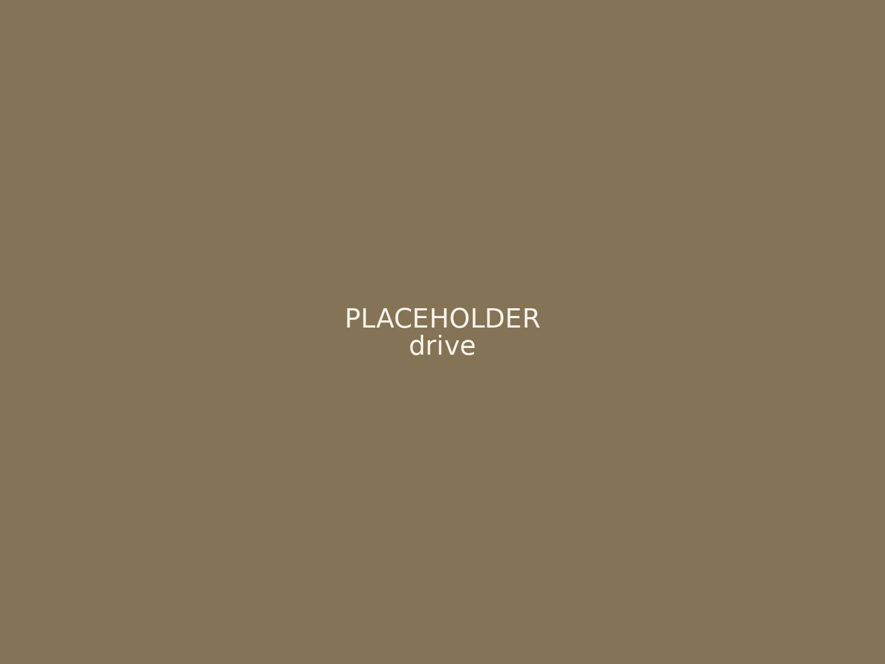
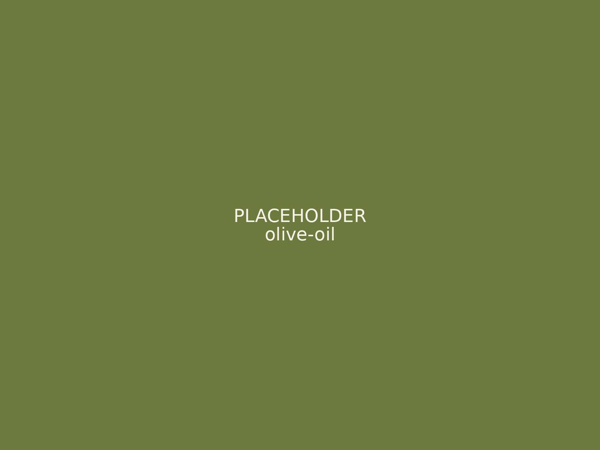

La villa in pietra
Soffitti dipinti, pavimenti in cotto, mobili d'epoca e due bagni, uno con vasca su piedini. Un luogo bello e riservato dove gli sposi possono prepararsi.
Una cappella privata consacrata, una villa in pietra e viali alberati dove si incontrano Toscana, Umbria e Lazio. In affitto a giornata per matrimoni, feste, riprese cinematografiche e servizi fotografici.

Al cuore della tenuta si trova una piccola cappella consacrata, con la volta interamente affrescata e la porta che si apre su palme e alberi secolari.
Accoglie una ventina di ospiti tra i più cari per una cerimonia intima, mentre tutti gli altri attendono sul prato. Essendo consacrata, vi si può celebrare un matrimonio religioso, previo accordo con il vostro sacerdote e con la diocesi.
Poche location nel centro Italia offrono una cappella privata riservata solo a chi affitta la tenuta quel giorno.
Dieci ettari di campagna privata alle porte di Aquapendente, con accesso proprio e tutti per voi per l'intera giornata.

Soffitti dipinti, pavimenti in cotto, mobili d'epoca e due bagni, uno con vasca su piedini. Un luogo bello e riservato dove gli sposi possono prepararsi.

Un ampio prato accanto alla villa, incorniciato da alberi maturi, con spazio per un ricevimento fino a 150 ospiti, sotto una tensostruttura o a cielo aperto.

Lunghi filari di alberi che diventano una navata naturale per una cerimonia all'aperto, un arrivo scenografico o una passeggiata fotografica indimenticabile.

Sotto la villa, un giardino selvatico con grotte ad arco in pietra e un'antica vasca, in parte ripreso dalla natura. Ideale per ritratti e scene d'atmosfera.

Soffitti affrescati e stanze d'epoca all'interno della villa, per le foto della preparazione e per scene in interni.

Ampio parcheggio, acqua ed elettricità in loco e una strada che permette ai camion di raggiungere il prato, per un allestimento senza complicazioni.
Noi offriamo la location. Voi portate il vostro team, il vostro stile e i vostri fornitori, senza fornitori esclusivi e senza pacchetti obbligati.
La tenuta si affitta a giornata. Su richiesta si possono concordare giorni aggiuntivi per l'allestimento, eventi su più giorni e riprese.

Le olive che crescono nella tenuta diventano il nostro olio extravergine d'oliva.
È un piccolo assaggio di questa terra che sposi e ospiti possono portare a casa. Chiedeteci delle bottiglie per i welcome bag o come bomboniere.
Aquapendente è un borgo medievale in provincia di Viterbo, nella campagna verde e vulcanica della Tuscia, appena a sud del confine toscano lungo l'antica Via Francigena.
Raccontateci qualcosa del vostro evento o della vostra produzione. Vi risponderemo al più presto con disponibilità e tariffe.